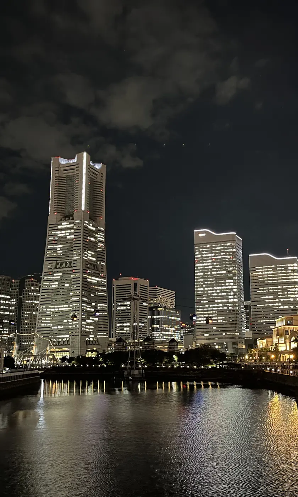
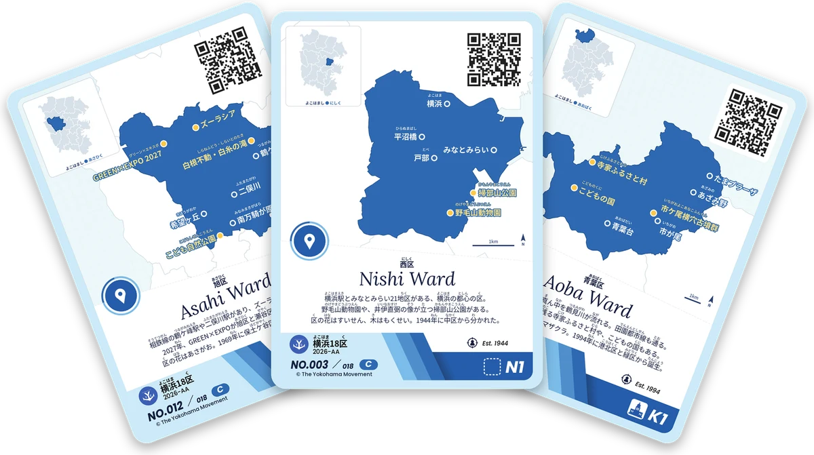
※掲載カードはイメージです
お知らせ
第1弾「横浜18区の地図カード」（全18種）を、12月にリリースする予定です。詳細は、決まり次第改めてお知らせします。
THE YOKOHAMA CARD の公式ホームページを公開しました。
横浜18区の地図カード
全18種・12月リリース
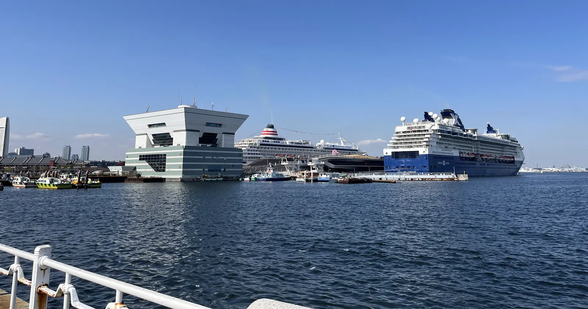
住みたい街ランキングで、横浜は
9年連続1位。
それなのに、
人口は78年ぶりに
減り始めた。
横浜は「住みたい街」として、長く選ばれ続けてきました。それでも2025年の国勢調査で、横浜市の人口は78年ぶりに減少しました。
憧れられることと、住み続けたいと思えることは、同じではない。私たちは、そこから始めます。
出典：SUUMO住みたい街ランキング2026 首都圏版（リクルート）／令和7年国勢調査 速報値（横浜市集計）
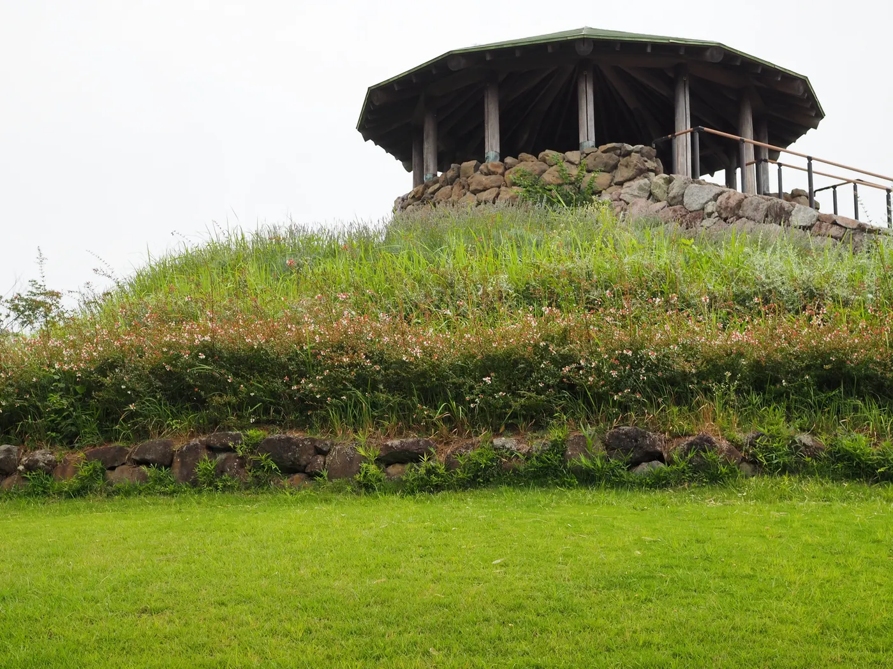
新しいものを
作らなくても、
魅力はもう、
この街に眠っている。
港の歴史、街並み、夜景、商店、そこで働く人たち。横浜には、まだ知られていない物語がたくさんあります。私たちは、それを1枚ずつカードにして、街の人の手に届けます。
集めるうちに、
自分の街に詳しくなる。
横浜の場所・人・出来事を描くトレーディングカードです。カードを手にした人が、その場所に実際に行ってみたくなる。そんなきっかけを作ります。
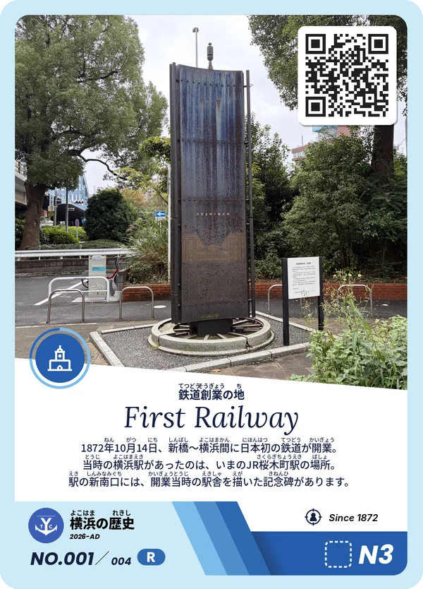
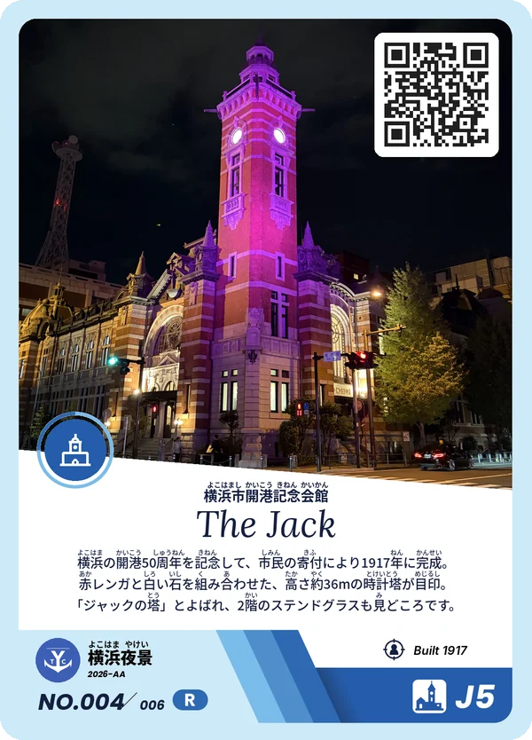
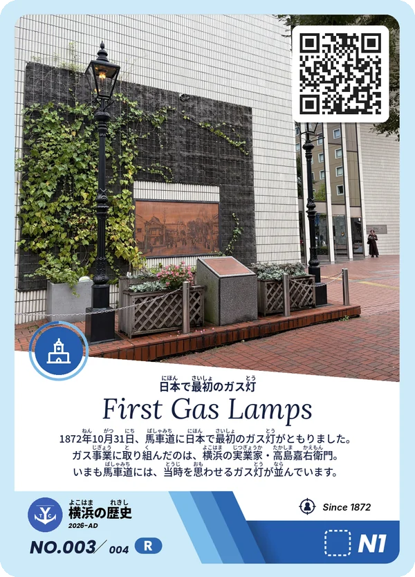


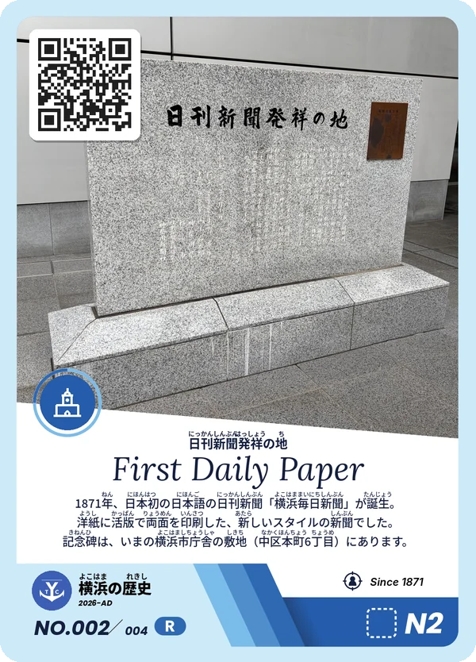
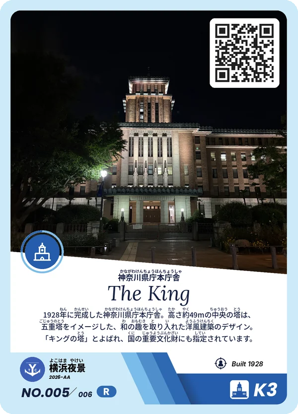
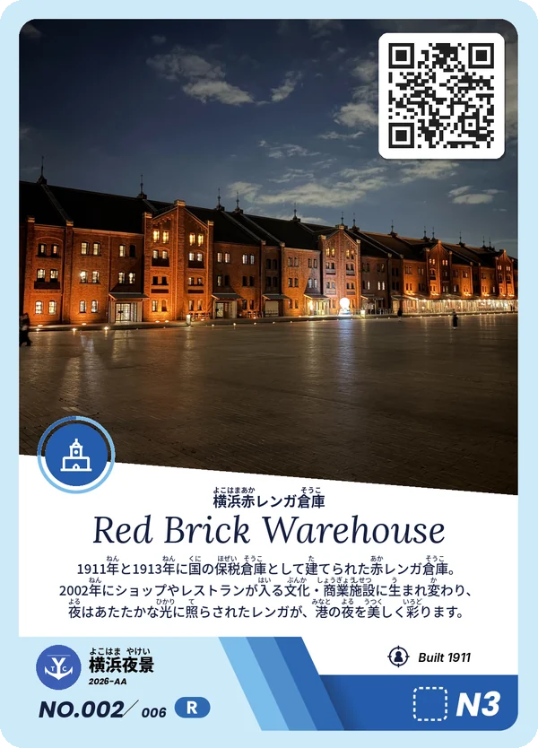
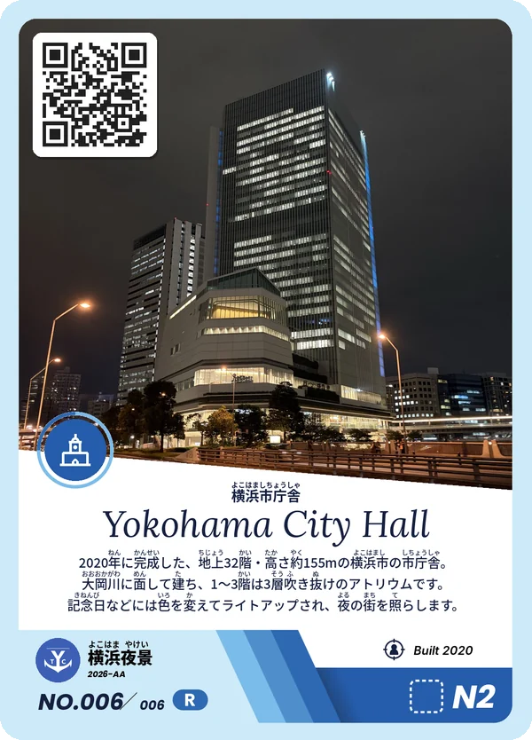
横にスクロールしてカードを見る
※掲載カードはイメージです
1枚のカードに、
3つの仕掛け。
-
横浜
漢字にはすべてふりがな
小学生でも読めるように。説明文は、その場所の歴史や見どころを3行にぎゅっとまとめています。
-
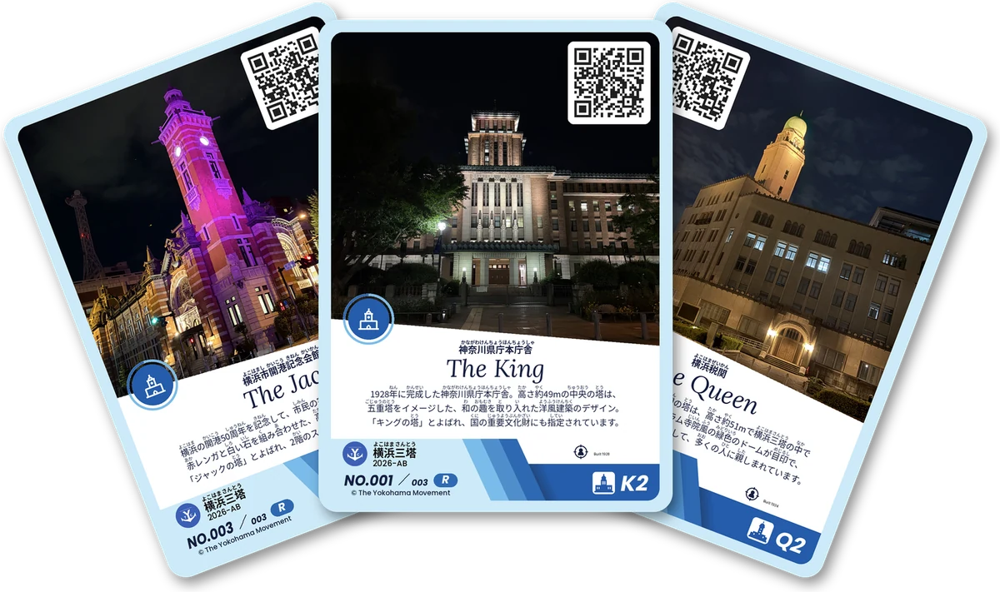
横浜三塔で、遊べるカードに
キング・クイーン・ジャックの「横浜三塔」をモチーフにしたマークと数字が、右下に入っています。友達と遊べるルールを準備中です。
横浜三塔バトルゲームの遊び方を見る -
QRコードから、その場所へ
カードのQRコードを読み込むと、お店や施設の公式ページ、関連する情報サイト、地図などへ。気になった場所に、もっと興味がわく仕掛けです。
子どもたちへ。
「横浜って面白い」を、
一番最初に。
横浜の小学生は、3年生から「自分のまち」を学び始め、区へ、市へと世界を広げていきます。カードを集めることが、その学びをもっと楽しくするきっかけになれたら。
手に入れたカードの場所へ、ぜひ親子で歩いてみてください。
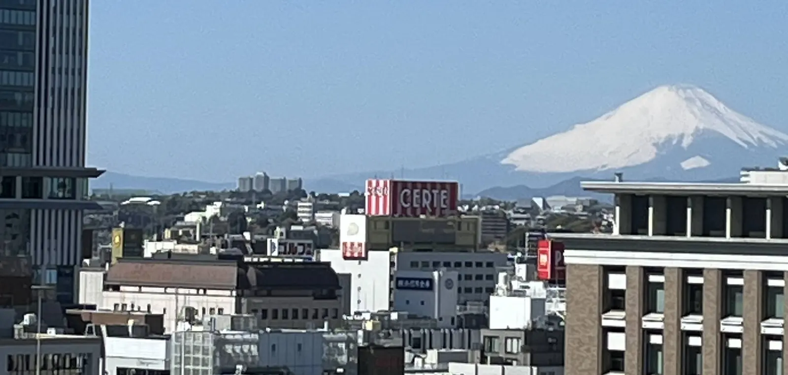
横浜を好きな人で
あふれる、
10年後、20年後へ。
横浜を心から楽しむ人が増えれば、その熱量に惹かれて「横浜に関わりたい」「住みたい」と思う人が集まってくる。私たちは、そんな活気あふれる横浜を目指します。
シリーズは、続いていきます。
街の魅力は、一度では伝えきれません。年に3〜4つのテーマで、横浜を描き続けていきます。
配布情報は、準備中です。
配布イベントや、カードがもらえる場所は、決まり次第このページとX・Instagramでお知らせします。
一般社団法人
The Yokohama Movement
横浜の再発見と再活性化をテーマに、2026年10月に活動を始めた団体です。非営利の活動として、横浜の街と人を元気にする取り組みを続けています。